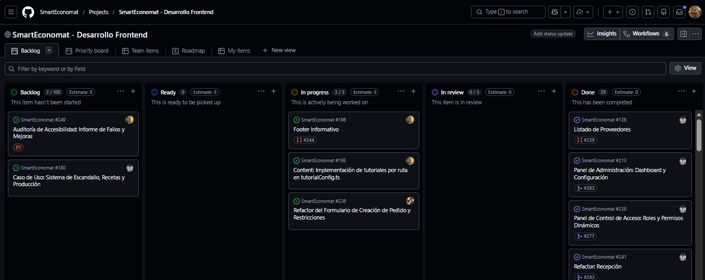
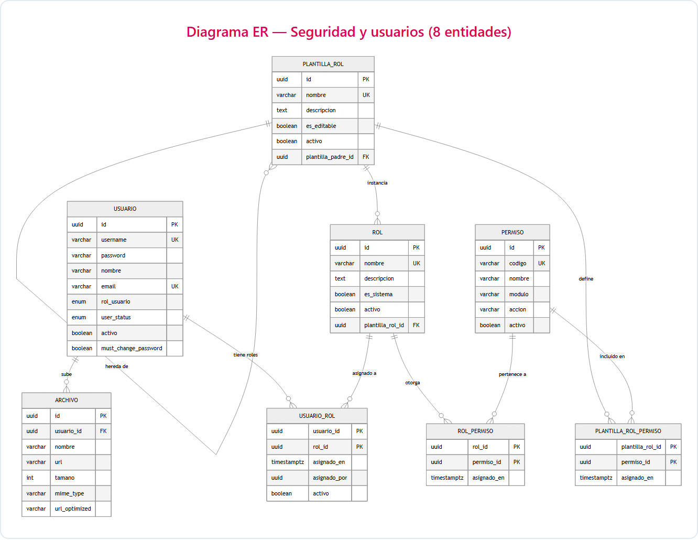

Trabajo Fin de Grado · DAW
SmartEconomat
Sistema profesional de gestión de economato con arquitectura full-stack, seguridad empresarial, UX accesible, despliegue Docker y operación local mediante Electron.
Autor: Darel Martínez Caballero
Organización ágil con GitHub Projects
El desarrollo se planificó y ejecutó utilizando metodologías ágiles apoyadas en tableros Kanban.
La gestión del proyecto (tareas, prioridades y estados) se ha centralizado en GitHub Projects. Esto ha permitido mantener la trazabilidad entre los issues y los Pull Requests, asegurando que cada cambio en el código responda a una necesidad real documentada.

Tablero operativo del desarrollo frontend en GitHub Projects.
Workflow Git profesional
El proyecto se organizó con ramas production, develop, feature/*, hotfix/* y docs/*, siempre con Pull Request, revisión y validación antes de integrar.
Participación del equipo
La actividad del repositorio evidencia volumen de trabajo, colaboración y revisión mediante PRs.
El proyecto se desarrolló con dinámica de equipo, trazabilidad de aportaciones y flujo de integración profesional, no como un desarrollo aislado sin control de versiones.

Fuente visual basada en CONTRIBUTORS.md.
Stack tecnológico y justificación
Frontend
UX accesible, PWA y componentización
Backend API
Arquitectura modular y contratos DTO
Base de Datos
Migraciones, UUIDv7 y transacciones ACID
Caché
Tokens temporales y rutas recurrentes
Despliegue
Entornos 100% reproducibles
Operación
Instalador local para usuarios no técnicos
La ventaja del ecosistema: Unificar todas las capas bajo TypeScript y una base común de Node.js 22 LTS reduce errores, garantiza la estabilidad técnica y acelera el desarrollo integral eliminando fricciones entre entornos.
Arquitectura interna del Backend
El backend utiliza una arquitectura modular basada en NestJS, separando responsabilidades para garantizar la escalabilidad, el tipado estricto y la facilidad de testing.
Punto de entrada de las peticiones. Validan la estructura mediante class-validator y DTOs, gestionando las respuestas HTTP.
El núcleo del sistema. Aquí reside la lógica de negocio pura, las transacciones ACID y la orquestación entre diferentes módulos.
Abstracción de la base de datos mediante TypeORM. Las entidades definen el esquema y los repositorios encapsulan el acceso a datos.
Comunicación API y contratos JSON
La comunicación se realiza por HTTP bajo /api/v1, con servicios frontend centralizados, DTOs backend como fuente de verdad, cookies httpOnly y respuestas normalizadas para que la UI no dependa de estructuras improvisadas.
El backend valida credenciales, firma JWT, establece cookie httpOnly y envuelve la respuesta con meta.app = "SmartEconomat".
{
"request": {
"method": "POST",
"url": "/api/v1/auth/login",
"credentials": "include",
"body": {
"email": "admin@smarteconomat.com",
"password": "********"
}
},
"response": {
"status": 200,
"headers": {
"x-request-id": "6f6d9a8c-0b2a-4c7f-9c55-8b47f5d3a6d1",
"Set-Cookie": "access_token=<jwt>; HttpOnly; Secure; SameSite=Strict; Path=/"
},
"body": {
"success": true,
"message": "Operación exitosa",
"data": {
"access_token": "<jwt firmado por JwtService>",
"requirePasswordChange": false
},
"meta": {
"app": "SmartEconomat",
"version": "1.0.0",
"timestamp": "2026-04-13T12:36:50.000Z",
"environment": "production",
"requestId": "6f6d9a8c-0b2a-4c7f-9c55-8b47f5d3a6d1"
}
}
}
}Tras el login, el frontend consulta /usuarios/perfil; el backend devuelve el usuario real más el array permisos.
{
"request": {
"method": "GET",
"url": "/api/v1/usuarios/perfil",
"credentials": "include",
"headers": {
"Cookie": "access_token=<jwt>"
}
},
"response": {
"status": 200,
"body": {
"success": true,
"message": "Operación exitosa",
"data": {
"id": "0196f2d2-7cc4-7b4a-8b8b-6d58d7f4a901",
"username": "admin",
"email": "admin@smarteconomat.com",
"rol": "ADMIN",
"activo": true,
"status": "ACTIVE",
"permisos": [
"productos:listar",
"inventario:ajustar_stock",
"usuarios:editar"
]
},
"meta": {
"app": "SmartEconomat",
"version": "1.0.0",
"timestamp": "2026-04-13T12:36:51.000Z",
"environment": "production",
"requestId": "a3b1c9de-5a20-42de-a1a4-f25b9efce8c2"
}
}
}
}El envelope estándar fija meta.app, versión, entorno y requestId para mantener trazabilidad y respuestas homogéneas en toda la API.
ER Mermaid del sistema RBAC
RBAC es una de las zonas más potentes del modelo: identidad, roles, permisos, plantillas y archivos quedan separados en entidades auditables.

88 / 88 permisos
84 / 88 permisos
39 / 88 permisos
11 / 88 permisos
Roles y asociación alumno-profesor
El dominio educativo no se resuelve solo con un campo de rol: combina cuentas de usuario, perfiles profesor/alumno, slots de clase y permisos efectivos.
Estructura RBAC con roles base (Admin, Profesor, Alumno) y permisos granulares resueltos dinámicamente en el backend.
Los alumnos se asocian mediante codigoClase. El sistema valida cupos y requiere activación explícita del profesor para operar.
Flujo de seguridad con mustChangePassword: las nuevas cuentas reciben credenciales temporales que obligan al cambio obligatorio en el primer acceso.
Catálogo de permisos existentes (I)
El backend centraliza los permisos en permissions.constants.ts. Cada código sigue el patrón modulo:accion y se reutiliza en guards, seeds, plantillas y tests.
- listar
- ver
- crear
- editar
- eliminar
- activar_desactivar
- resetear_password
- listar
- ver
- crear
- editar
- eliminar
- generar_ean13
- listar
- crear
- editar
- eliminar
- listar
- ver
- crear
- editar
- cancelar
- restaurar
- eliminar
- listar
- ver
- crear
- editar
- eliminar
- listar
- ver
- crear
- editar
- eliminar
- resolver
- listar
- ver
- crear
- editar
- eliminar
- listar
- ver
- crear
- confirmar
- cancelar
- listar
- ver
- crear
- editar
- eliminar
- restaurar
Estos permisos cubren la operación de economato: usuarios, catálogo, compras, recepción, incidencias, albaranes, distribución y ubicaciones.
Seguridad y control de acceso
La seguridad no depende de la interfaz: el backend valida identidad, permisos efectivos, entrada de datos y límites de uso antes de ejecutar negocio.
Roles, permisos efectivos y decoradores @RequirePermissions.
DTOs, pipes, whitelist y backend como fuente de verdad.
Rate limiting, cookies httpOnly y errores normalizados.
Contexto funcional del sistema
SmartEconomat cubre el dominio operativo del economato y el contexto educativo: productos, proveedores, pedidos, recepciones, inventario, distribuciones, incidencias, producción, profesores, alumnos y roles.
Flujo end-to-end: compra → recepción → stock / distribución → incidencias → producción/control.
Rate limiting: protección ante abuso
SmartEconomat aplica límites de tasa como parte de la seguridad por capas. No solo protege el login: diferencia entre operaciones de autenticación, escritura y lectura para equilibrar seguridad y usabilidad.
Reduce abuso automatizado en autenticación y recuperación sin bloquear el resto del sistema.
Lecturas, escrituras y auth tienen umbrales distintos porque no tienen el mismo coste ni riesgo.
Prioriza usuario autenticado o email/username frente a IP para evitar castigar redes compartidas.
CSRF, headers y configuración segura
La seguridad también se trabaja en la configuración HTTP y en el arranque por entorno, no solo en autenticación y permisos.
Token XSRF-TOKEN y cabecera X-XSRF-TOKEN para proteger métodos POST, PUT, PATCH y DELETE.
Cabeceras defensivas, cookies httpOnly, secure en producción y sameSite=strict en token CSRF.
Nginx carga certificados desde rutas estables; variables como dominio, puertos, DB, JWT, Sentry y proveedor TLS se separan por entorno.
La política de orígenes debe ser explícita en producción para evitar que cualquier frontend pueda reutilizar cookies de sesión.
JWT, credenciales SMTP, DB y Sentry se gobiernan por variables de entorno y configuración de despliegue.
El objetivo operativo es fallar pronto si faltan variables críticas, evitando despliegues aparentemente correctos pero inseguros.
La auditoría de seguridad propone endurecer validación de variables críticas, CORS por entorno, logging estructurado y rate limiting distribuido antes de escalar horizontalmente.
OpenAPI, i18n y observabilidad
Además de implementar negocio, el proyecto incorpora capas de soporte para mantenimiento, internacionalización y diagnóstico de errores reales.
La API se documenta desde controladores y DTOs con @nestjs/swagger, publicada bajo /api/v1/docs.
react-i18next y nestjs-i18n centralizan mensajes, validaciones y errores en español/inglés.
Frontend y backend integran Sentry; el cliente puede medir Core Web Vitals para rendimiento percibido.
Swagger permite comprobar endpoints, DTOs, autenticación y ejemplos sin depender de documentación externa desactualizada.
Los fallos dejan de ser capturas sueltas: se agrupan por evento, entorno, ruta, usuario y stack técnico.
Validaciones y mensajes se mantienen desde claves reutilizables, evitando textos duplicados en frontend y backend.
Estas capas muestran preocupación por mantenimiento, soporte multilenguaje, trazabilidad de fallos y documentación viva de contratos.
1 PDF/XLSX asíncrono en streaming
Las exportaciones no salen como JSON: el controlador escribe cabeceras binarias y delega en servicios asíncronos que generan el documento mientras lo envían al cliente.
Content-Type distingue PDF/XLSX y Content-Disposition fuerza descarga con nombre de archivo.
Los métodos devuelven Promise<void>; el servidor no envuelve la respuesta en el envelope JSON.
XLSX escribe filas conforme llegan los lotes y PDF usa stream de salida, evitando construir una respuesta JSON pesada.
Consumo de inventario inteligente (FEFO / FIFO)
SmartEconomat utiliza un sistema de consumo basado en FEFO (First Expired, First Out) y FIFO (First In, First Out). Al tratarse de un economato con productos perecederos, se prioriza el stock con menor margen de caducidad.
El motor de base de datos ordena primero los lotes con menor fecha_caducidad para asegurar que el alimento no se eche a perder.
Si los productos no tienen fecha de caducidad o caducan el mismo día, se desempata por fecha_entrada.
Si una receta pide 10kg y el lote antiguo solo tiene 3kg, el sistema consume los 3kg y luego saca los 7kg del siguiente lote automáticamente.
UX/UI, accesibilidad y design system
La auditoría UX/UI documenta mejoras verificadas con WAVE, Lighthouse, Chrome DevTools y revisión manual de foco en resoluciones 375px, 768px y 1280px.
Perceptibilidad, operabilidad, comprensibilidad y robustez.
F1-F4, skip links, scroll inteligente y toasts de confirmación.
Focus trap en modales, retorno de foco y aria-label en controles.
React.lazy/Suspense, skeletons y reducción de spinners bloqueantes.
Tokens de color ajustados para cumplir contraste AA en estados críticos.
Paleta primaria/secundaria, MUI, componentes reutilizables y consistencia visual.
Cargas, errores, formularios, confirmaciones y diálogos destructivos tienen feedback visible.
La revisión contempla móvil, tablet y escritorio para evitar layouts válidos solo en una resolución.
La UI prioriza tareas frecuentes: buscar, filtrar, recibir, confirmar, exportar y mantener el sistema.
Testing, calidad y CI/CD
La calidad del software se asegura mediante una estrategia de pruebas multicapa (unitarias, de renderizado y E2E visuales) soportada por herramientas modernas. Todo ello actúa como puerta de integración en el pipeline CI/CD.
Backend testeado con Jest validando servicios aislados y mocks. Frontend utiliza Vitest para funciones de utilidad en un entorno veloz.
Se utiliza Testing Library (junto a Vitest) para verificar que los componentes React de la UI se monten y respondan correctamente al DOM.
Playwright simula flujos reales en navegador real. Ejecuta interacciones automáticas end-to-end y previene regresiones visuales.